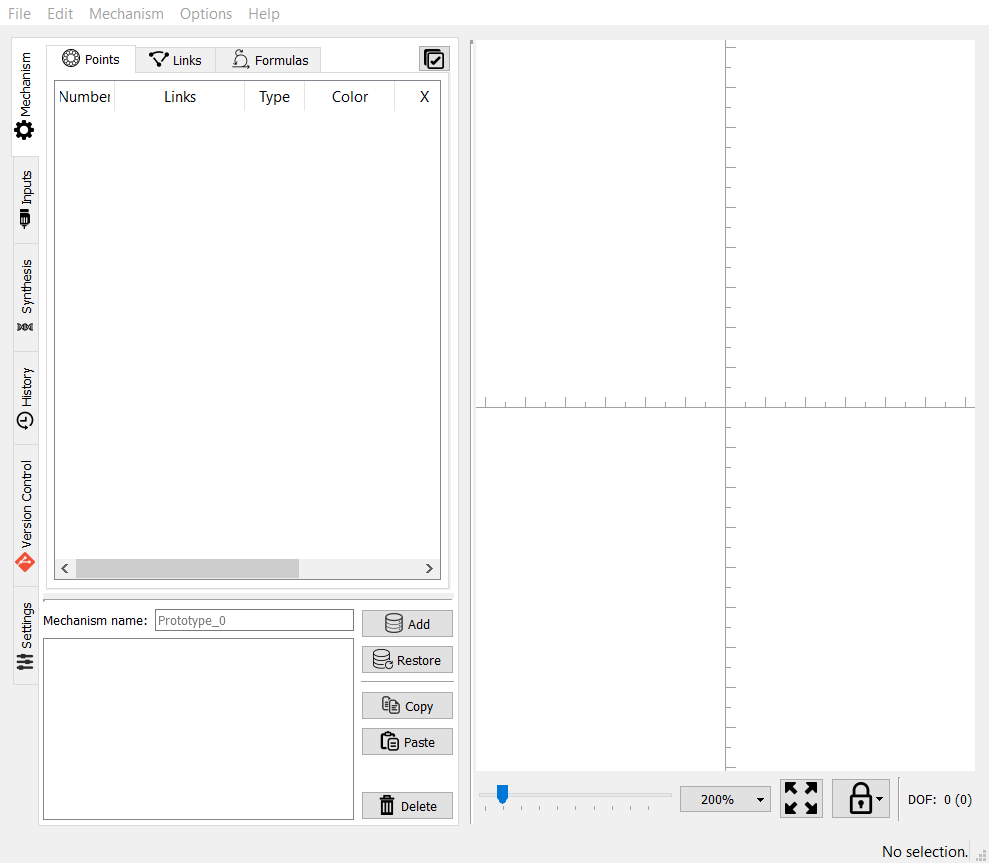

(以 pyslvs-18.8.0.mscv1900-amd64.exe 開啟)

Pyslvs 主畫面的上方為功能表列 (Menu bar), 右側為畫布 (Canvas), 左方則有各式功能的分頁欄 (Tab widgets).
功能表列涵蓋大部分的功能, 其中部分有關各項目的細部操作, 則必須在對應的分頁欄中選取或設定.
Pyslvs 左側中的 Mechanism 子頁面, 主要用於輸入機構關鍵點與運動連桿, 使用時以滑鼠點選 Mechanism 頁面後, 可在右方工作區, 以滑鼠輸入機構關鍵點與運動連桿.
Pyslvs 的 Inputs 子頁面用於宣告機構的主動軸, 並進行運動模擬.
Pyslvs 的 Synthesis 子頁面用於進行平面機構的結構合成與尺寸合成.
功能表列中根據不同的功能分類如下:
檔案 (File)
建立新的工作簿、開啟既有的工作簿、參考範例, 以及不同檔案格式的匯入與匯出功能.
編輯 (Edit)
復原與重做功能.
選項 (Options)
檢視方式調整以及工作簿相關資訊.
說明 (Help)
與 Pyslvs 相關網站與套件資訊.
F1 - 有關 Pyslvs
Shift + F1 - Toggle 全螢幕